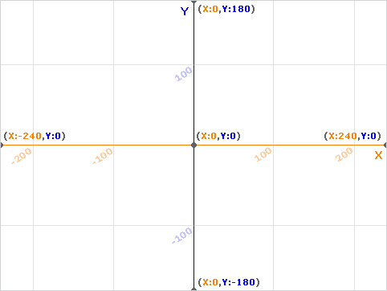
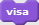
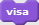

Scratch-idéer
Några enkla Scratch-program som man kan bygga och
ändra tillsammans
Anders Lindahl 2014
Du får kopiera, sprida och ändra det här dokumentet enligt CC BY-SA 4.0.
Hitta i Scratch
Så här ser Scratch-fönstret ut:

I övre vänstra hörnet finns "scenen", där du kommer se resultatet av dina spel. Om du klickar på den blåa fyrkanten i övre vänstra hörnet så fyller scenen hela skärmen.
I mitten ser du en massa blåa pusselbitar som du kan använda för att göra ditt spel.
Till höger syns ytan där man kan pussla ihop block.
Du kan byta språk i Scratch genom att klicka på den lilla jordgloben till höger om Scratch-logotypen uppe i vänstra hörnet.
Pussla ihop block
Scrach-blocken fungerar som pusselbitar. De flesta av dem pusslar man ihop efter varandra:

En del kontroll-block kan sitta runt block:

Formen på blocken visar hur de kan pusslas ihop. I runda hål kan man pussla in block med rundade hörn:

...och i kantiga hål block med kantiga hörn:

Röra på sig
Det här programmet får katten att röra på sig när du trycker på den gröna flaggan:
Hur kommer katten röra sig?
Kan du få katten att röra sig i andra mönster? En fyrkant, en triangel, en åtta?
Alla blåa block som sitter ihop utförs på en gång i Scratch, det syns alltså ingen skillnad på de här
två blocken när katten rör sig trots att de ser olika ut:

Klicka på katten
Här är ett spel där man ska klicka på katten som rör sig. Varje gång man träffar jamar katten:

Här är några idéer på hur man kan ändra programmet:
- Räkna poäng varje gång man träffar
- Ge minuspoäng om man missar (dvs om man klickar på bakgrunden)
- Låt katten säga ”Grattis!” när du når tio poäng
- Få katten att röra sig snabbare när man har mer poäng
- Få katten att studsa snett, inte bara fram och tillbaka
Spela toner
Med Scratch-blocken under rubriken ”Ljud” kan man lätt göra ett program för att spela musik. Det här programmet kopplar knappar på tangentbordet till olika toner.
Här är några idéer på hur man kan göra med programmet:
- Använd programmet för att spela ”Blinka lilla stjärna”
- Prova att byta instrument
- Prova att lägga flera ”Spela tonen”-block efter varandra för att pussla ihop en melodi
- Prova att låta Scratch spela en slumpad ton (slumptal hittar du under rubriken ”Operatorer”)
- Gör ett spel där man får höra en slumpad ton och ska spela samma ton med tangentbordet
Video
Om din dator har en kamera så kan du leka med den i Scratch. Scratch kan känna av rörelse framför kameran.
Programmet nedan slår på kameran och katten jamar om det rör sig tillräckligt mycket:

Om det är svårt att få katten att reagera, prova att ändra värdet 90 ovan till något lägre, tex. 50. Video-rörelse har värden från noll till hundra, där noll motsvarar orörlig och hundra mycket rörelse.
Här är några idéer på hur man kan ändra programmet:
- Få katten att röra sig när du viftar framför kameran.
- Få katten att röra sig av sig själv, ge poäng när du lyckas vifta under den.
- Lägg till ytterligare en sprite som rör sig av sig själv, och låt den ge minuspoäng om den känner rörelser.
("Vänd video på" är ett översättningsmisstag. Om du kan engelska, kan du klura ut vad det står i engelska Scratch?)
Ett rymdspel
Såhär kan man göra ett spel där saker flyger mot spelaren. I mitt exempel har jag valt en rymdraket som spelare, men du kan välja vilken du vill.

Först spelarens program:
Välj sedan en ny sprite för det som ska flyga mot spelaren – t.ex. tennisbollar. Här används ”kloner” för att skapa flera kopior av samma sprite.
Programmet till vänster ser till att det dyker upp en ny klon var femte sekund. Programmet till höger styr vad den klonen ska göra.
- Bestäm vad som ska ge poäng. Att träffa en klon eller att missa/hålla sig undan från en klon?
- Kan du göra klonerna snabbare?
- Klonerna siktar på spelaren när de är längst upp på skärmen. Kan du få dem att sikta fler gånger?
Knuffa på saker
Detta är en enkel början till ett spel där en katt knuffar på en fotboll.
Vi börjar med katten. Den behöver bara kunna styras på något sätt:

Fotbollen som ska flytta sig när den blir knuffad behöver kunna lite mer:

Här är några idéer på hur man kan ändra programmet:
- Lägg till ett mål att knuffa bollen till
- Få bollen att rulla en liten bit när den blivit knuffad istället för att bara hoppa 30 steg
- Få bollen att rulla lite hela tiden, så att katten bara kan ändra riktningen
Game over!
Ibland vill man inte att spelet ska starta direkt när man klickar på den gröna flaggan, och ibland vill man avsluta spelet med en snygg "Game Over!"-bild.
Det finns flera olika sätt att göra detta. Ett är att låta bakgrundsbilden styra. Så här kan det se ut:
Innan du provar detta behöver du skapa tre bakgrundsbilder. Du kan hämta dem ur Scratch inbyggda bibliotek, eller rita egna.
När du klickar på den gröna flaggan kommer den första bakgrundsbilden visas i 10 sekunder. Sedan växlar spelet till nästa bild, och den växlingen får katten att börja röra på sig.
Om du klickar på katten så växlas den tredje bilden in, och katten försvinner.
Rita blommor
Här är ett ganska långt program där katten använder pennan i Scratch för att rita en blomma:
Såhär kan det se ut när man kört programmet några gånger:
- Kan du rita blommor i andra färger?
- Kan du rita större blommor?
- Kan du göra om programmet så att katten fyller hela scenen med blommor?
- Kan du göra ett eget Scratch-block för att rita blommor?
Pennans färg
Pennans färg i Scratch styrs med två värden:
"Pennans färg" är ett värden mellan 0 och 200.
- Rött: 0
- Gult: 35
- Grönt: 65
- Turkost: 100
- Blått: 130
- Rosa: 170
- Rött (igen): 200
"Pennans nyans" används för att sätta "ljusstyrkan". Nyans 50 är klara färger. Lägre värde ger mörkare färger och högre värde ger ljusare färger. Vid nyans 0 ser allting svart ut, vid nyans 100 ser allting vitt ut.
- Kan du göra ett program som ritar streck med alla 200 färgerna?
- Kan du rita en böjd regnbåge?
Punkter och riktningar
Kartor för att komma ihåg var olika punkter finns och vad olika riktningar betyder:




 
